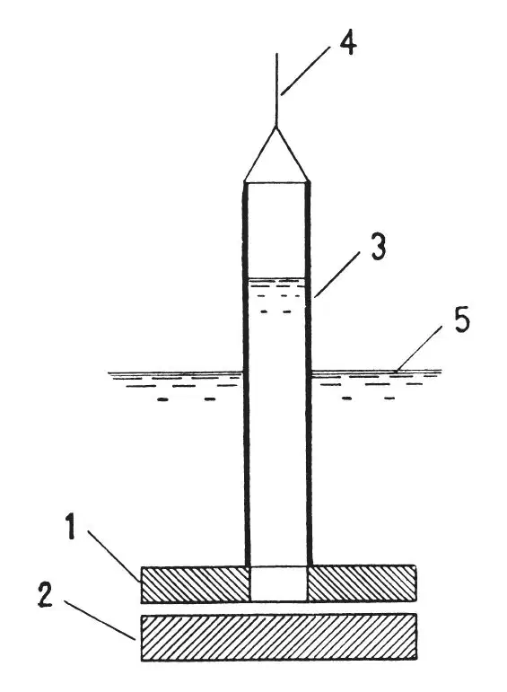

英文
英文卡皮查
编者按
在以往的实验中曾记录到一种奇怪的现象，当温度低于约2.18 K时，液氦的热导率惊人的高。在这篇文章中，物理学家彼得·卡皮查认为这一物理现象是由于液体黏度的急剧减小所造成的，因为这样会使得对流传热更加容易。他注意到最近一些实验测量到黏度的减小，但现在他的研究组通过更为精确的实验发现，低于2.18 K时液氦的黏度至多是其他已知物质的测量值的1/10,000。卡皮查认为如果液氦在这样的低温下变成了“超流体”，甚至流动时黏度为零，那么这个实验就能得到解释。 英文
如同凯索姆首次观测到的那样，液氦II在λ点之下时表现出了异常高的热导率，这启发了我：也许可以用对流对它进行解释。如果这样解释的话就要求氦II的黏度非常小；到目前为止，仅有的对液氦黏度的测量是在多伦多进行的[1]，测量结果显示，低于λ点时液氦的黏度是常压下的1/3，是略微高于λ点时的1/8。然而，在上述实验中，并没有完全确认液氦的运动形式就是层流，而不是湍流。 英文
重要的是，由于液氦的比重 大约为0.15，与普通流体没有很大差别，但其黏度μ与普通气体相比却非常小，这样就使得液氦的动力黏度ν＝μ/格外的小。于是，当液氦在普通黏度计中流动时，雷诺数可能会很高，然而只有雷诺数保持很小的值时，才能使运动保持层流形式，对于在多伦多所使用的测量圆柱振子阻尼的方法尤其是这样。但是多伦多实验并不满足这一条件，因此推导出来的黏度值应该对应于湍流运动，而这比真实值大多少都有可能。 英文
大约为0.15，与普通流体没有很大差别，但其黏度μ与普通气体相比却非常小，这样就使得液氦的动力黏度ν＝μ/格外的小。于是，当液氦在普通黏度计中流动时，雷诺数可能会很高，然而只有雷诺数保持很小的值时，才能使运动保持层流形式，对于在多伦多所使用的测量圆柱振子阻尼的方法尤其是这样。但是多伦多实验并不满足这一条件，因此推导出来的黏度值应该对应于湍流运动，而这比真实值大多少都有可能。 英文
液氦II的动力黏度很小，这就使得测量其黏度比较困难。为尽量保持层流，我们设计出了如下实验方法（见附图）。利用液体流经圆盘1和2之间空隙时的压强差可以测得黏度；其中两个圆盘是用玻璃制成的，并且是光学级平整的，它们之间的空隙可以利用云母隔离片进行调节。上面的圆盘1直径为3厘米，中间有一个直径1.5厘米的洞，洞上固定着一个玻璃管（3）。利用线（4）使这个装置在液氦中上升和下降，就可以令管3中液柱的水平位置高于或低于外围杜瓦瓶中液面（5）。利用测高计读出两液面之间的差，我们就可以推导出流量和压力的大小。 英文

测量的结果相当明显。当两盘之间没有隔离片时，即令盘1和2接触（通过光学条纹的观测，估计其间距约为半微米），液氦流在高于λ点时需要经过几分钟才勉强能检测到，而在低于λ点时，液氦流动非常容易，管3中的液面在几秒钟内就稳定下来了。从这些测量我们可以推断，常压下氦II的黏度是氦I的1,500分之一。 英文
实验还显示，氦II穿过空隙时的压强差正比于流动速度的平方，这表明这种流动一定是湍流。但是，如果我们假设它以层流的形式运动，并计算它的黏度，得到数量级为10–9单位（厘米克秒制）的值，显然，这只是真实值的上限。按照这种估计，尽管间隙如此小，雷诺数仍然超过了50,000这个肯定会出现湍流的数值。 英文
我们还在继续实验工作，期望进一步减小液氦II的黏度上限值，但是目前的上限（即10–9单位（厘米克秒制））已经非常小了，因为它最多是氢气（过去认为是黏度最小的流体）黏度的1/104。目前得到的极限也许足以表明，与超导体进行类比，氦在低于λ点时会进入一种特殊的状态，我们不妨称之为“超流体”。 英文
如同我们之前提到的那样，我们的实验中显示的异常低的黏度，可能确实可以用来解释高热导率，以及由艾伦、佩尔斯和乌丁[2]所观测到的其他异常性质。在对液氦II进行所需的技术操作过程中，由于其具有较大的流动性，因此湍流的出现显然是无法避免的，即便在用于测量热导率的小毛细管中；而这种湍流运动将通过对流效率极高地传输热。 英文
（王耀杨 翻译；于渌 审稿）